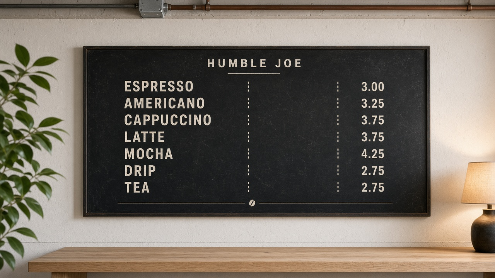

Humble Joe
A portable café ministry — small but beautiful, tear-downable, and rooted in who we already are.
Believe · Belong · Become · Be Sent
Stakeholder briefing · September 2026 · Planning draft — not legal or tax advice
Warming a 7,200 sq ft shell into a Church Home living room
Light wood · dark menu · plants & art · barista behind the counter · portable
Not a side hustle. A ministry expression of RockPoint.
Humble Joe is how the multipurpose building practices Believe / Belong / Become / Be Sent midweek and on Sundays — hospitality with a face, beauty that invites presence, and a front door for Newberg.
Believe
A calm space where conversations about Jesus can begin without a stage.
Belong
Couches, coffee, and presence — Church Home you can sit in.
Become
Training, volunteering, and hosted rhythms that form people.
Be Sent
Neighbors and George Fox students meet RockPoint before a service.
Humble Joe
- 01Joseph Quiet faithfulness beside Mary’s story.
- 02Humility The posture we want guests to feel when they walk in.
- 03Contrast An intentional foil to the coffee brand “Proud Mary.”
- 04Under RockPoint Not a spin-out brand — unless a clear reason later says otherwise.
Small but fancy.
Portable.
On mission.
300–400 sq ft of living-room café inside an industrial shell — beauty without a permanent build-out.
7,200 sq ft shell → 300–400 sq ft living room
~7,200 sq ft · ~120 × 60 · pole-barn multipurpose
Drywall interior, concrete floors, metal trusses — industrial until we warm it.
300–400 sq ft soft corner
Rug + furniture boundary — not drywall. Tear-downable for youth, worship, events.
~40–60 sq ft counter
Small fancy espresso (Linea Mini class), grinder, cold holding, POS. Barista behind the counter.
Casters + fold-down wood skirts
Hall clears in ~60–90 minutes once practiced. Skirts hide wheels when parked — living room, not waiting room.

Beauty that serves presence
- 01Light woods Pale oak / ash — counter, tables, slim shelf.
- 02Dark menu Charcoal board, cream type — quiet and readable.
- 03Art & foliage Gallery wall, hanging plants, warm lamps.
- 04Small fancy espresso Compact prosumer / mini-commercial — not a multi-group bar.
- 05Clear geometry Guests on one side; barista on the other.
Humble Joe is values with furniture
Passionate Worship
Beauty & presence before and after we gather.
Fervent Prayer
Open before pre-service prayer.
Biblical Teaching
Hosted tables where the Word continues.
Spirit-Filled Life
Hospitality as Spirit-empowered welcome.
Family-Oriented
Seating and rhythms for every age.
Mission-Minded
Front door for Newberg & George Fox.
Church Home
The living room of the house of faith.
How each value shows up
Passionate Worship
Atmosphere that prepares hearts — beauty, soft mornings, lingering after the amen so worship doesn’t end at dismissal.
Fervent Prayer
Sunday open before pre-service prayer. Space for quiet asks, pairs, and post-service prayer over coffee.
Biblical Teaching
Not a second sanctuary — a table where teaching continues: hosted evenings, huddles, “what did you hear today?”
Spirit-Filled Life
Welcome, discernment, encouragement. Volunteers serve from giftedness — not as free commercial labor.
Family-Oriented
Seats for kids-to-grandparents. After-service lingering. Midweek for parents, youth, Equip nights.
Mission-Minded
Differentiate on presence and programming — not by out-competing downtown cafés on third-wave flex.
Church Home
Church Home you can smell the coffee in — authentic community under the gospel, with a pour spout.
Oregon prior art — and a Newberg gap
Taborspace / Bell Tower
Mt. Tabor Presbyterian — church nonprofit café + training; neighborhood front door.
Legacy Coffee & Books
Church-owned with separate board; profits to community nonprofits — governance clarity.
Heretic Coffee Co.
501(c)(3) café; training + hospitality posture; beauty with mission.
Real café competition near downtown / George Fox. No published church–café case study inside city limits — room to lead as Church Home + Mission-Minded, not as another third-wave competitor.
Do it clean
| Layer | What | Source |
|---|---|---|
| Yamhill County EH | Plan review + permanent restaurant license if standing public hours | yamhillcounty.gov · 503-434-7525 |
| Oregon / OHA | Food Sanitation Rules + food handler cards ($10 / 3 yrs) | oha.oregon.gov |
| City of Newberg | Business license; building permits only if remodel / change of use | Portable path minimizes construction |
| Skip at launch | OLCC alcohol; benevolent temporary (ORS 624.106) is for events only | Not a substitute for standing ops |
Three non-negotiables: license for real · keep books clear (hospitality / retail / rental) · pay the craft (one paid operator + capped volunteers).
Portable path — not a build-out
Planning ranges from 2025–26 published equipment & retail pricing. Not quotes.
Strong prosumer machine, good furniture, light branding.
Linea Mini–class espresso, beautiful lounge, insurance + runway.
Custom carts/shelves, richer seating, more capital.
Traditional build-out ($80k–$250k+) is not the plan. Ministry ROI > max espresso volume.
Where $32–48k goes
Linea Mini–class ~$6.6k
Grinder $1.6–2.7k
Undercounter $1.9–2.5k
Water + tools $0.7–1.5k
Subtotal ~$10.8–13.3k
Counter $0.8–2.5k
Sofas / chairs $1.6–4k
Tables, slim shelf, lamps
Rug, plants, art, menu
Subtotal ~$4.3–12.4k
Yamhill + Newberg licenses*
Insurance rider
POS + first inventory
Brand + contingency
Working capital 1–2 mo.
Subtotal ~$6.6–20k
*Confirm Yamhill permanent plan-review + annual license line items from the current fee PDF before locking budget.
Run-rate after open — church-embedded model
Unlike a commercial café, Humble Joe carries no market rent. Costs below are planning ranges for modest hours inside RockPoint’s building.
| Line | Monthly range | Notes |
|---|---|---|
| Paid café lead | $1,200–2,400 | ~15–25 hrs/wk |
| Part-time barista | $0–1,200 | As volume grows |
| COGS (beans, milk, cups) | $800–3,500 | ~28–35% of sales |
| Utilities (incremental) | $100–350 | Espresso, fridge, lights |
| Insurance rider | $40–180 | Product / GL add-on |
| Processing, supplies, maint. | $150–450 | Cards, filters, cleaning |
| Rent | $0 | Church space |
| Total run-rate | $2.3–8k | Modest → busier months |
At ~$4.50 average ticket and ~$3,500/mo fixed+semi-fixed (lean month), you need roughly ~780 tickets / month (~26 / day across open days) before contribution covers the floor — far below a rented storefront café.
Full commercial shops often burn $15–35k/mo with rent + full payroll. Our advantage is occupancy at $0 and part-time labor — ministry model, not mall café.
Sustainable staffing — on mission
Open before pre-service prayer — and again after service
Hospitality window — not retail during the service itself.
Tue–Sat — daytime corner open
One hosted evening — discipleship / community
Sunday — before prayer + after service
Monday — tear-down / deep clean / hall reset
Paid café lead
Quality, open/close, food safety, cash.
Part-time barista
Peak mornings as volume grows.
Volunteers
Hospitality & hosted nights — not free baristas covering commercial volume.
Eight moves
- 01Operate under RockPoint Portable 300–400 sq ft in the 7,200 shell.
- 02Design lock Light woods, dark menu, plants, lamps, art, wheeled furniture, small fancy espresso, barista behind the counter.
- 03Values in the rhythm Especially Church Home, Fervent Prayer, and Mission-Minded.
- 04Sunday windows Before pre-service prayer and after service.
- 05Budget Preferred ~$32–48k startup + plan for ~$2.5–8k/mo ongoing.
- 06Pre-open Yamhill plan review + Newberg business license; stay portable.
- 07Hire paid lead first Volunteers additive. Separate books.
- 08Entity later Revisit spin-out only if retail becomes large or unrelated.
Five diligence items before capital
Confirm these five before writing checks.
Yamhill permanent fee PDF
Pull the current Licensing and Plan Review Fees PDF (July 2026–June 2027) and lock plan-review + annual restaurant-license dollars. Temporary benevolent ($64) is for one-off events only — not a standing café. Budget placeholder stays $400–$1,500 until line items are confirmed.
Zoning & occupancy
Confirm the multipurpose building’s address allows public food service at our proposed hours, and that a portable 300–400 sq ft corner does not trigger a change-of-use or construction permit we are trying to avoid.
Furniture & cart
Get broker / vendor quotes for light-oak lounge pieces and the custom wheeled espresso cart (fold-down skirts, barista-behind-counter). Planning ranges are not quotes — freight and lead times matter before soft open.
Insurance rider
Product liability + general liability add-on for retail food under RockPoint. Budget $500–$2,000 year one (~$40–$180 / mo) until a broker prices the actual rider against our menu and hours.
UBIT / exemption
Nonprofit attorney + CPA on standing retail under the church: books (hospitality / retail / gifts), unrelated-business income posture, and when (if ever) a spin-out entity would be wiser than staying under RockPoint.
Humble Joe is Church Home with a pour spout.
Planning draft only. Attorney + CPA before spend or entity decisions. · ↑↓ or scroll · RockPoint Church